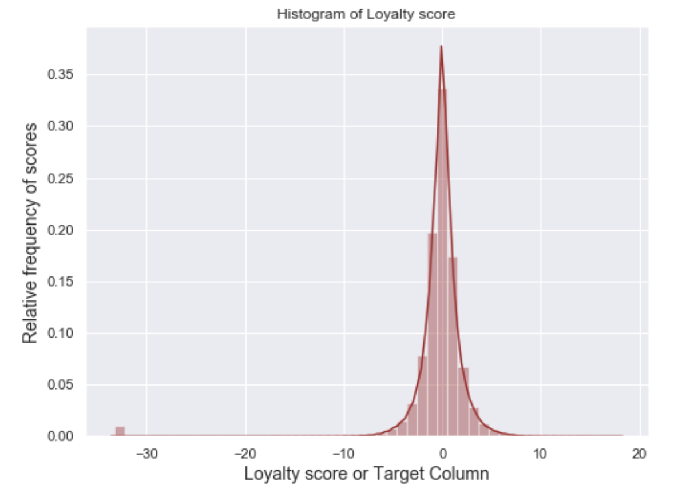
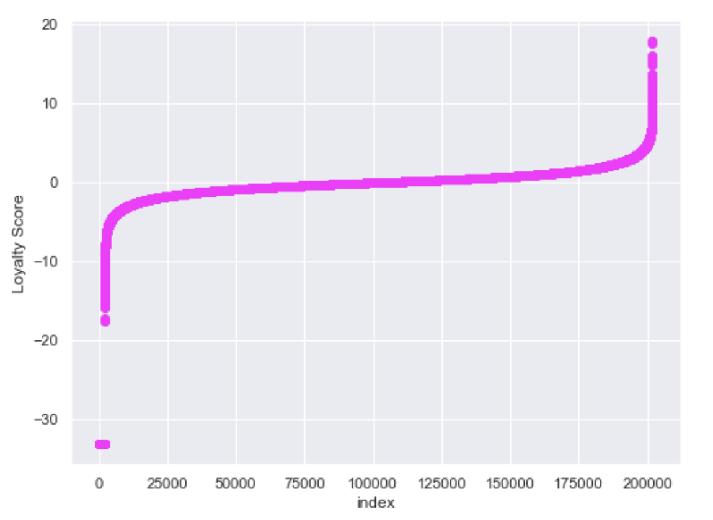
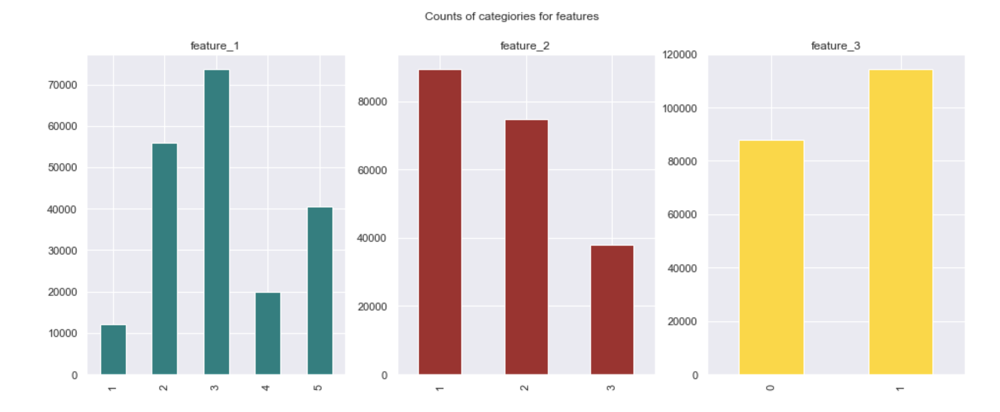
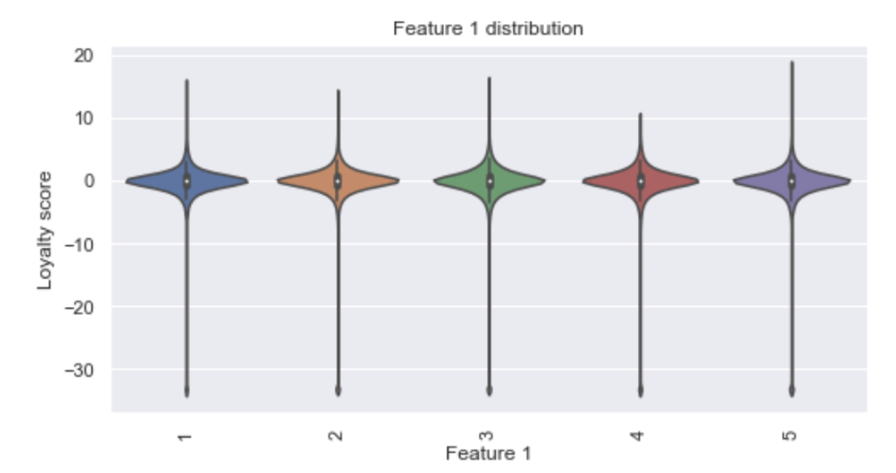
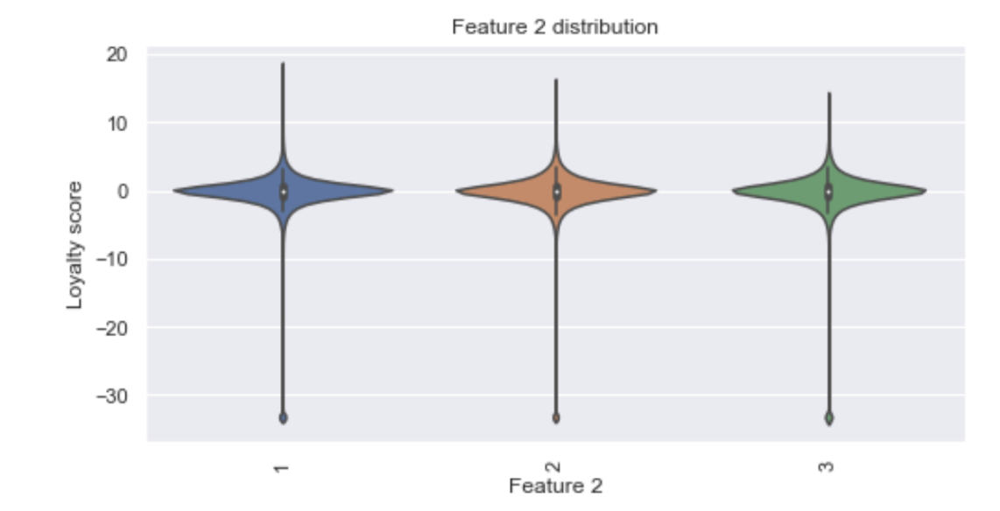
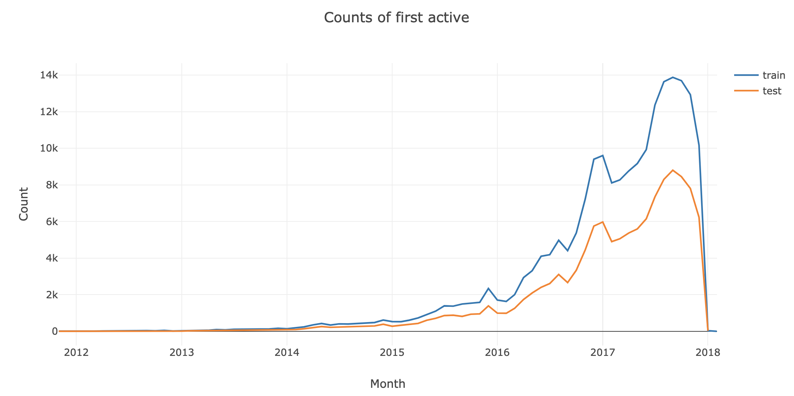
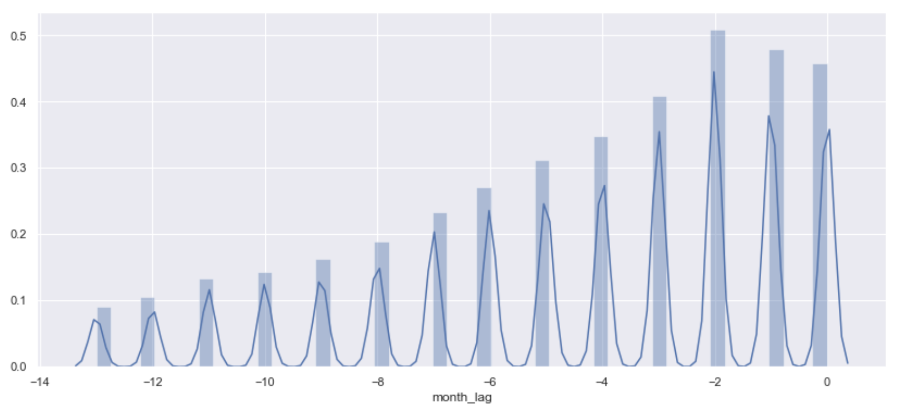
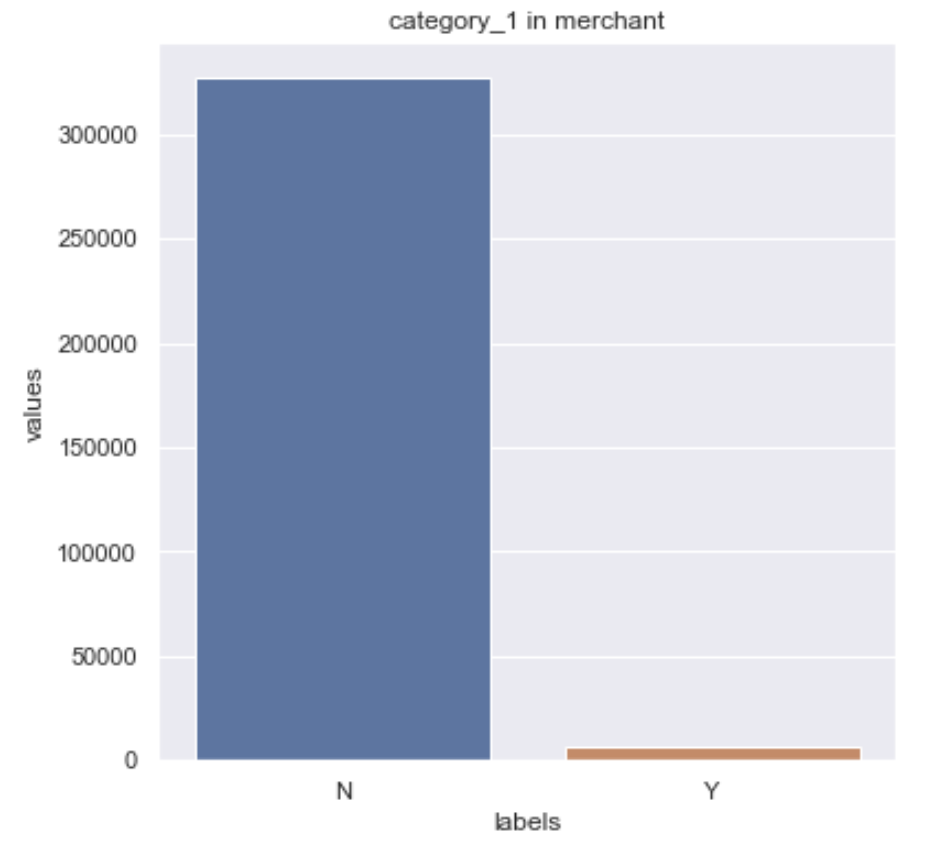
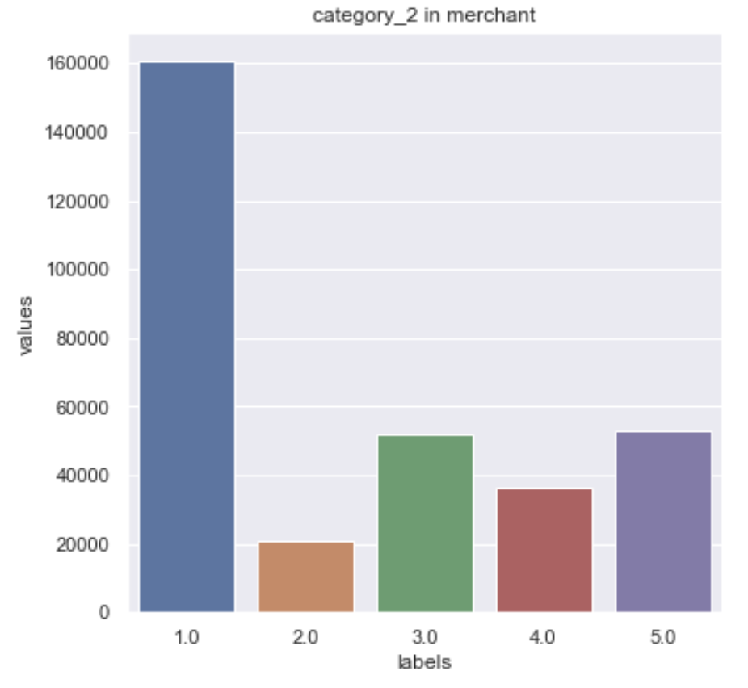

Fig 1. Below shows the histogram and scatter plot of loyalty scores of the customers in the train set. We can see that some of the loyalty values are far apart (less than -30) compared to others. We have about 2207 rows, which has values different from the rest. In this exploration, the histogram of target column is plotted in terms of their frequency just to analyze the shape of the predicted column and to check if the distribution follows is a normal distribution with a mean of ‘0’ and a standard deviation of +- 1. Herein, it is seen that most of the loyalty score shares a score of less than -30.
This can be concluded that with so low rating of loyalty scores, will lead to not recommended zone for the next time. Even if those rows were remove from the data, the model performance was not better. So the rows were not dropped.


Fig 2. Below is the bar chart of the features in the train set.

Bar graphs represents the 3 feature columns in the dataset and their categories count.
Feature 1 has 5 categories, feature 2 has 3 categories and feature 3 has 2 categories.
The violin plot shows the distribution of the different categories in all three features. Looking at the graph the distribution of categories looks kind of similar.
Feature 1 has 5 categories, feature 2 has 3 categories and feature 3 has 2 categories.
The violin plot shows the distribution of the different categories in all three features. Looking at the graph the distribution of categories looks kind of similar.
Fig 3. Below graph shows the violin plot for the columns in train dataset.
 Fig 4. Below graph shows the count of first active month customers

The graph shows the trends of customers using cards from 2012 to 2018. It can be seen that for train and test data the trend looks similar. The development seen to be slowly rising from 2014 to year 2017. But in year 2018, there is a sharp declined in using cards.
Fig 5. Distribution of month lag for historical transactions.

It’s the distribution plot (using seaborn) of the histogram plot, plotted for the ‘month_lag’ column.
This column belongs to the ‘historical_transactions’ file which gives the historical transaction details
for three months for every card transacted. In this file, the month_lag column states that how many months
from the reference date(current transaction) did the transaction(historical transaction) take place.
Fig 6. Explore the merchant dataset.
 
It is clear from the dataset the category 1 and category 2 all are categorical variables
Number of categories of each of them is as follows:
Category 1 : Two categories (Y,N)
Category 2 : Five categories (1, 2, 3, 4, 5)